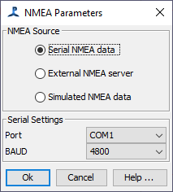

GPS Data are output from GPS Receivers in National Marine Electronics Association (NMEA) format. NMEA format Data are also output by many other ships instruments, such as wind instruments and echo sounder and also by AIS (Automatic Ship Identification) systems.
NMEA is a standard specification for interface and data exchange between marine instruments. It allows ship's instruments to "talk to" each other and to computers. For more detailed information see https://en.wikipedia.org/wiki/NMEA_0183.
NMEA Data form older devices are generally sent in RS-232 protocols and can be input to a computer via a serial port. If your computer does not have a serial port (nowadays few laptops do), then it's generally possible to use a serial to USB to serial converter. Most GPS systems now connect to your PC through a USB connection rather than the older 9 pin serial connection. Note though that these USB connections are still using the serial port protocol, it's just that the Serial to USB converter has been built into the GPS. An incredibly annoying feature of these Serial / USB connectors is that if you plug them into a different UDB port on your computer, it will change the number of the virtual serial port, so whenever possible, plug them into the same port each time ! If the serial port number has changed, then you'll need to go into the configuration dialog (see below) and select the correct port.
GPS data are fundamental to PAMGuard in addition, several other useful data sources which may be useful to PAMGuard may be available in an NMEA data string and several PAMGuard modules, for instance the AIS Module may need to access NMEA data. Thus, PAMGuard has a module for accessing NMEA data and an additional module for GPS Processing which is dependent on an NMEA Acquisition module. If needed, you can have more than one NMEA module in your configuration, each connected to a different NMEA device, or you can get an NMEA multiplexor to combine NMEA data from multiple devices into a single data stream.
To add a new NMEA Data Collection module to PAMGuard, select the File->Maps and Mapping->NMEA Data Collection menu item.
From the Detection Menu, select NMEA Data Collection>NMEA Parameters

PAMGuard can also simulate NMEA GPS and AIS data. This is useful during training and setting up exercises. GPS Data are simulated according to a user defined start position, course and speed. AIS data are sampled from data collected in the English channel.
To verify the NMEA data source, select Detection>NMEA Data Collection>NMEA Strings
This will show the NMEA Strings List Dialog, an example of which is below.
This dialog shows the current NMEA strings being acquired by PAMGuard. The update time and string ID are also shown. In the example above, a GPRMC string has been acquired.
The "Last update" time should update according to the time and date on your GPS receiver, or the simulated date if in simulation mode. If this is not the case, please check all cables and connections and re-try. If using the NMEA Server utility, check that the NMEA output strings are updating.
Setting up NMEA isn't always as straight forward as it might be.
Some information on making connections to an NMEA signal can be found here.
Some troubleshooting FAQ's and solutions are here.